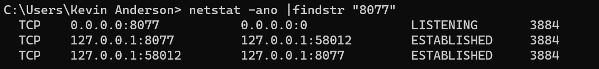
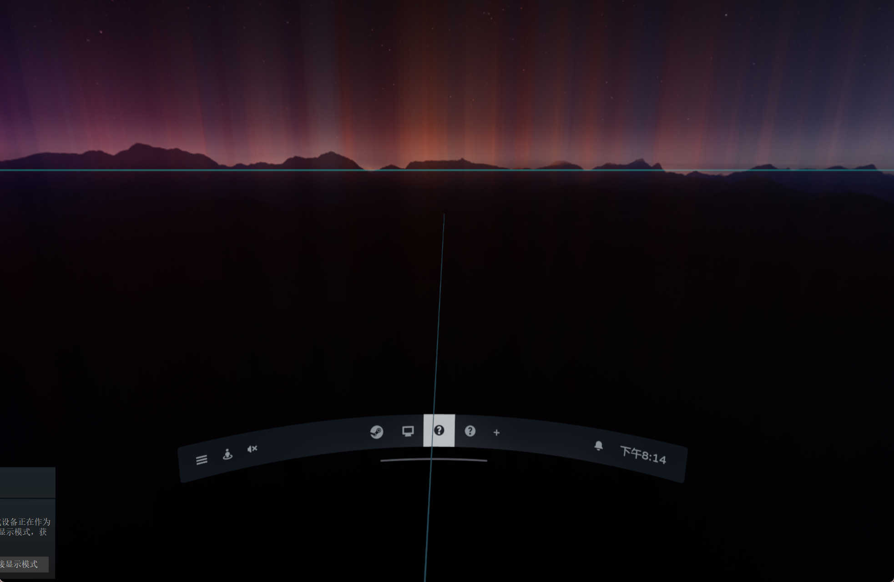
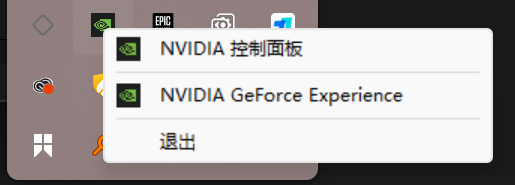
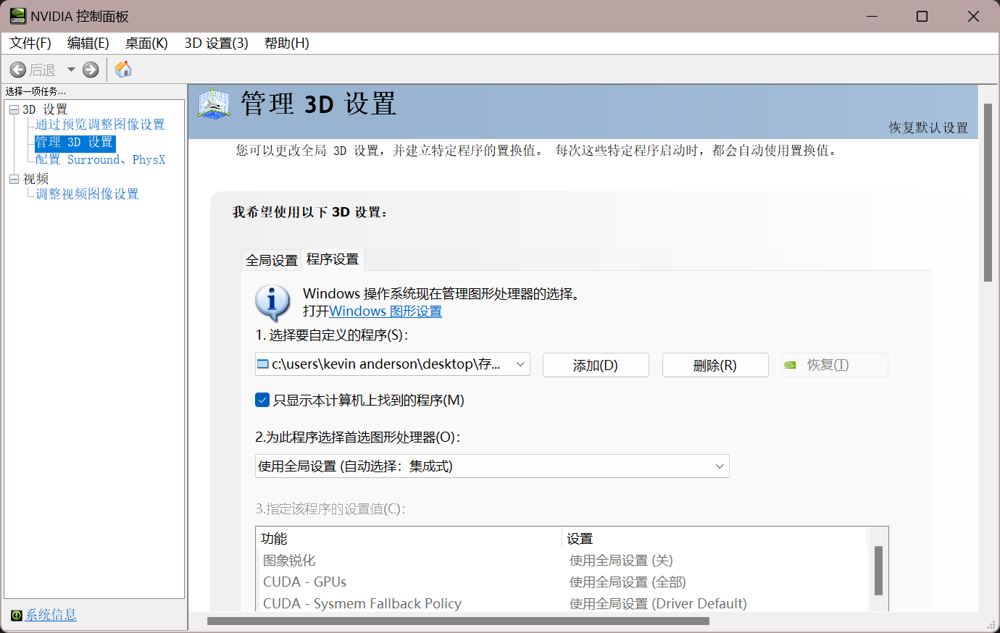
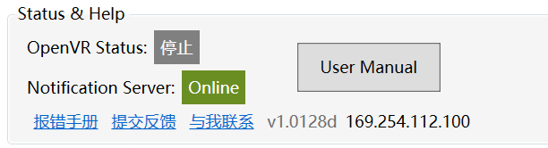

Welcome to the NotificationCat Error Handling Manual
Thank you for purchasing this software from Itch.io or the Steam store 🤗 The content on this page will assist you in troubleshooting errors encountered while running the software. If you encounter an error not covered in this manual, please use the contact methods provided in the User Support section to submit a support ticket and seek assistance from the developers!
Utilize the Website Search Function
Using the search function to look up error messages will save you time when navigating the documentation.
PC Errors 💻
This section covers errors and solutions for NotificationCat VR on PC.
Program Unresponsive at Startup / Missing .Net Framework Runtime Prompt / Program Crashes at Startup
When a program fails to start without any error messages or exceptional behavior, it can be a complex issue for developers to diagnose. In such cases, when you encounter these situations, it's recommended to try the following steps:
- Completely uninstall the NotificationCat VR program.
- Delete the path to the NotificationCat VR program's app.vrmanifest in the appconfig.json file located in the Steam/config folder (usually generated after using the "Launch with SteamVR" feature).
- Attempt to reinstall the program.
If the above steps fail to resolve the abnormal behavior of the application, please submit a support ticket to the developers.
This program was developed using .Net Framework 4.7.2. Running the program without the .NET Runtime installed on your computer may result in runtime errors. Please download and install the .Net Framework 4.7.2 Runtime and try again.
OpenVR State Always "Offline" or "Error," Even After Reinstalling the Program or Restarting SteamVR
This is a rare OpenVR service error. If you encounter this situation, try setting the OpenXR runtime to SteamVR:
- Open SteamVR and display the Advanced Settings in the settings window.
- Navigate to the OpenXR tab.
- Click to set SteamVR as the OpenXR runtime.
If setting SteamVR as the OpenXR runtime doesn't resolve the issue of OpenVR state remaining "Offline" or "Error," or if the OpenXR runtime is already set to SteamVR, please submit a support ticket to the developers.
Notification Server State Always "Offline" or "Error," Even After Reinstalling the Program or Restarting the Computer
If you receive an error related to the notification server when launching the program, please refer to the relevant error solutions. If you don't encounter any notification server error prompts, please submit a support ticket to the developers.
Error When Starting the Notification Server, Please Refer to the Error Manual to Resolve This Issue
Before troubleshooting this issue, please check your Windows system environment. This software uses TCP ports 8077 and 8079 for communication. Any firewall rules or port occupation related to these ports could lead to the notification server remaining "Offline" or "Error," along with displaying this error prompt.
How to check if the ports are functioning normally:
- Close the NotificationCat VR program.
- Press the Win key + R key on your keyboard to open the Run window, type cmd, and press Enter.
- In the Cmd window, input the following commands and check the results:
netstat -ano |findstr "8077"
Press Enter and then continue with
netstat -ano |findstr "8079"
Under normal circumstances, there should be no output when you input the above commands. If you see output similar to the image below, it indicates that a program is occupying the mentioned ports.

Use the following command to find information about the occupying program:
tasklist|findstr "ending digits of the command output"
This command will return the process name of the occupying program. You can use the Windows Task Manager to find the program's specific location and information.
If you don't encounter any port occupation issues, please check your firewall rules:
- Close the NotificationCat VR program.
- Press the Win key + R key on your keyboard to open the Run window, type control, and press Enter.
- Go to Windows Defender Firewall and select Advanced Settings on the left.
- In both Outbound Rules and Inbound Rules, delete any restrictions related to ports 8077 and 8079.
- Restart your computer and run the software again.
If you have checked the firewall and port occupation and still haven't found any settings affecting program communication, please submit a support ticket to the developers.
Attention to Antivirus Software
Some antivirus programs might block application network communication. If you encounter such errors, try disabling your antivirus software and then retry.
Error When Connecting Phone to the Notification Server, Please Refer to the Error Manual to Resolve This Issue
If you haven't encountered any notification server error prompts, try restarting the software or your computer. If the issue persists, please submit a support ticket to the developers.
Error When Processing Data in the Client, Please Refer to the Error Manual to Resolve This Issue
This error occurs when the program receives invalid data from the sender. Such errors are usually caused by bugs when fetching notifications. Try restarting Windows or the sender program (such as Android or the phone link application).
If the issue persists, please submit a support ticket to the developers.
Error When Starting Toast Mode, Please Refer to the Error Manual to Resolve This Issue
Please refer to the Toast Mode section to reinstall the UWP auxiliary program and try again. If the issue persists, please submit a support ticket to the developers.
Error When Starting Toast Mode, "Get the app to open this 'ncatvr' link"
Please refer to the Toast Mode section to reinstall the UWP auxiliary program and try again. If the issue persists, please submit a support ticket to the developers.
Startup with SteamVR Doesn't Work or Program Doesn't Remember My Options on Next Startup
The program relies on the NotificationCatVR.exe.config file within its folder to remember your preferences. If you delete, move, or overwrite this file, your options will be lost.
If the NotificationCatVR.exe.config file is not the issue, check if the appconfig.json file in the Steam/config folder has write permissions.
Starting NotificationCat VR with SteamVR Causes SteamVR to Crash, or NotificationCat VR Crashes SteamVR
If you have verified through experimentation that NotificationCat VR is causing SteamVR to crash, please submit a support ticket to the developers.
Crash When Receiving Notifications After Phone Connection (or Enabling Toast Mode)
Check your OpenVR state. You should start this program after launching SteamVR. If the issue persists, please submit a support ticket to the developers.
Program Unable to Obtain Computer IP Address, Possibly Due to Multiple Network Adapters or IPv4 Addresses on Your Computer, Please Refer to the Error Handling Manual to Resolve This Issue
If you have virtualization programs such as Vmware Hyper-v or virtual network tunnel tools like v2ray installed on your computer, the software might create multiple virtual network adapters, making it hard for NotificationCat VR to find the correct WLAN IPv4 address. Manually find your wireless network adapter's IPv4 address using the command prompt or other tools, and connect. If the issue persists, please submit a support ticket to the developers.
Resolving Dashboard Program Display Issues on Dual Graphics Card Devices
Due to compatibility issues with the OpenVR layer, the dashboard program cannot automatically set the program to start with the high-performance GPU card. This may result in no content being displayed when you open the NotificationCat VR settings program in the SteamVR dashboard.

To address this issue, you need to manually set the dashboard.exe program in the program directory to start in "dedicated graphics card" mode through the control panel of the discrete graphics card driver (e.g., NVIDIA Control Panel).
Example using NVIDIA Dedicated Graphics Card
Locate the NVIDIA Control Center icon in your taskbar tray, right-click, and select NVIDIA Control Panel.

In Manage 3D Settings -> Program Settings, add and select the dashboard.exe in the program directory. Set "Preferred graphics processor for this program" to: High-performance NVIDIA processor.

Click Apply to save the changes, restart the NCATVR program, and you're good to go!
Android Errors 📱
This section covers errors and solutions for NotificationCat VR on Android.
Unable to Install APK Package
Your Android operating system must be Android 10 or above.
App Crashes or Becomes Unresponsive After Opening
When a program fails to start without any error messages or exceptional behavior, it can be a complex issue for developers to diagnose. In such cases, when you encounter these situations, it's recommended to try the following steps:
- Reinstall the app.
If the above steps fail to resolve the abnormal behavior of the application, please submit a support ticket to the developers.
Unable to Retrieve Version Number from Update Server, Please Refer to the Error Manual to Resolve This Issue
If you encounter this issue, it indicates that your device can't communicate with the software's update server to retrieve the version number. This might be due to the update server being temporarily under maintenance or offline, or your device not having internet access. You can continue using the older version, but this might result in unexpected errors.
Otherwise, manually visit the download page to get the new version.
Connection Failed, Please Refer to the Error Manual to Resolve This Issue
When attempting to connect your Android device to the computer, you might encounter this issue. Pay attention to the error type and message.
-
An Invalid IP Address was specified You must input the correct IP address in the input box!
-
Connection timed out Please verify that your IP address is correct or that your Android device is on the same network segment as the PC. You can check the IP using the PC-side software.

Note on Non-Unique IPs
If your computer has virtual network adapters or both IPv4 and IPv6 addresses, this function will return the first IP. This IP might not be your WLAN IP!
-
Connection refuse Your IP address is correct, but your PC is rejecting the connection. Refer to the Error When Starting the Notification Server, Please Refer to the Error Manual to Resolve This Issue section for solutions.
-
Socket is already connected An Android phone can only connect to one PC device. To reconnect, restart the application.
-
Network unreachable Check your router's forwarding settings.
App Goes to Background or Switches to Other Apps, and Notification Messages Are Not Forwarded
Please disable any power-saving optimization settings for the app (such as background/sleep freeze).
Successful Connection, but the Program Doesn't Forward Any Messages
Check if the app has the "Access to All App Notifications" permission enabled.
Note for Chinese Android Systems
Due to modifications of API notification rule permissions by Chinese Android systems (such as MIUI, various OS versions), you need to manually toggle the "Access to All App Notifications" permission every time you start the program! Otherwise, notification forwarding might not work correctly. Native Android systems (such as Pixel) are not affected.
QR Code Connection Mode Doesn't Start Camera or Hangs
Check if the app has the "Use Camera" permission enabled.
Toast Mode 🍞
This section covers errors and solutions for the UWP auxiliary program on PC.
Program Hangs at the Logo After Startup / App Crashes After Startup
Please refer to the Toast Mode section to reinstall the UWP auxiliary program and try again. If the issue persists, please submit a support ticket to the developers.
Your System Currently Doesn't Support Toast Notification Forwarding, Please Refer to the User Manual to Resolve This Issue
Your system version is lower than Windows 10 1809 October Update and cannot use this feature.
You Must Allow the App to Read Notifications, Please Refer to the User Manual to Resolve This Issue
You might have denied the app's request to read notifications when the app started. Allow the app's permission again:
- Open Windows Settings and navigate to Privacy and Security.
- Find "Notifications" in App Permissions.
- Allow the app to access notifications.
- Restart the UWP auxiliary program.
If the issue persists, please refer to the Toast Mode section to reinstall the UWP auxiliary program and try again.
Error During Permission Handling, Please Refer to the User Manual to Resolve This Issue
Please refer to the Toast Mode section to reinstall the UWP auxiliary program and try again. If the issue persists, please submit a support ticket to the developers.
Unable to Connect to the Notification Server! Please Refer to the Error Manual to Resolve This Issue
Please refer to the Error When Starting the Notification Server, Please Refer to the Error Manual to Resolve This Issue section for solutions. If the issue persists, please refer to the Toast Mode section to reinstall the UWP auxiliary program and try again.
UWP Auxiliary Program Doesn't Forward My Windows Notifications
Check if any program is occupying the notification retrieval service. If the issue persists, please refer
to the Toast Mode section to reinstall the UWP auxiliary program and try again.
Unlisted Errors ❌
Please submit a support ticket to the developers.